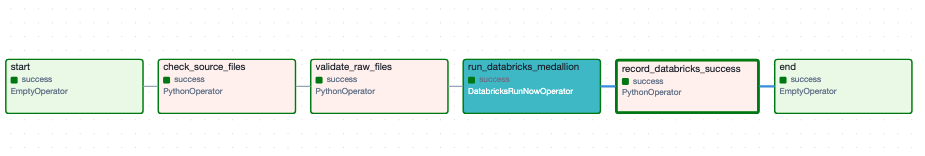
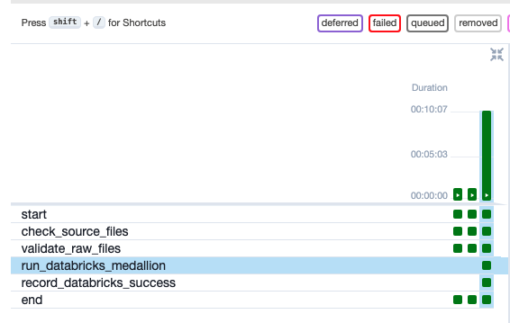

Airflow DAG
m5_pipeline
6 tasks · linear
End-to-end orchestration is live: local Airflow validates raw M5 files, then
runs Databricks job walmart_m5_medallion (218487573209118)
through Bronze → Silver → Gold (~11–12 minutes).
flowchart LR
A[data/raw CSVs] --> B[Airflow m5_pipeline]
B --> C[check + validate]
C --> D[DatabricksRunNowOperator]
D --> E[Job walmart_m5_medallion]
E --> F[Bronze]
F --> G[Silver]
G --> H[Gold]
H --> I[record_databricks_success]
Defined in airflow/dags/m5_pipeline_dag.py.
flowchart LR
start --> check_source_files --> validate_raw_files
validate_raw_files --> run_databricks_medallion
run_databricks_medallion --> record_databricks_success --> end
| Task | Type | Role |
|---|---|---|
check_source_files | Python | Confirm local raw CSVs exist |
validate_raw_files | Python | Schema/size/rows + write manifest |
run_databricks_medallion | DatabricksRunNow | Trigger & wait for Databricks job |
record_databricks_success | Python | Write local success audit marker |
Latest run: every task green, including Databricks trigger and success recorder.

start → check → validate → run_databricks_medallion → record → end (all success).
Earlier runs were short local-only validations. The latest run includes the full Databricks Medallion job (~11–12 minutes).

Job walmart_m5_medallion runs notebooks sequentially through the Medallion layers.
flowchart TB
bronze_ingestion["01 bronze_ingestion"] --> silver_sales["02 silver_sales"]
silver_sales --> silver_products["03 silver_products"]
silver_products --> silver_calendar["04 silver_calendar"]
silver_calendar --> gold_dimensions["05 gold_dimensions"]
gold_dimensions --> gold_facts["06 gold_facts"]
gold_facts --> gold_aggregations["07 gold_aggregations"]
| Task key | Notebook | Layer |
|---|---|---|
bronze_ingestion | 01_bronze_ingestion | Bronze |
silver_sales | 02_silver_sales | Silver |
silver_products | 03_silver_products | Silver |
silver_calendar | 04_silver_calendar | Silver |
gold_dimensions | 05_gold_dimensions | Gold |
gold_facts | 06_gold_facts | Gold |
gold_aggregations | 07_gold_aggregations | Gold |
flowchart TB
subgraph Airflow["Apache Airflow m5_pipeline"]
A1[check_source_files] --> A2[validate_raw_files]
A2 --> A3[run_databricks_medallion]
A3 --> A4[record_databricks_success]
end
subgraph Databricks["Databricks Job walmart_m5_medallion"]
B1[01 Bronze] --> B2[02 Silver sales]
B2 --> B3[03 Products/stores/prices]
B3 --> B4[04 Calendar]
B4 --> B5[05 Gold dims]
B5 --> B6[06 Gold facts]
B6 --> B7[07 Gold aggs]
end
A3 -->|Run Now + wait| B1
B7 -->|job success| A4
{
"status": "databricks_medallion_success",
"batch_id": "m5_20260909T123803Z_ac813310",
"databricks_job_id": "218487573209118",
"layers": ["bronze", "silver", "gold"],
"notebooks": [
"01_bronze_ingestion",
"02_silver_sales",
"03_silver_products",
"04_silver_calendar",
"05_gold_dimensions",
"06_gold_facts",
"07_gold_aggregations"
]
}
File: data/ingestion/manifests/databricks_run_latest.json
workspace.walmart_m5_gold